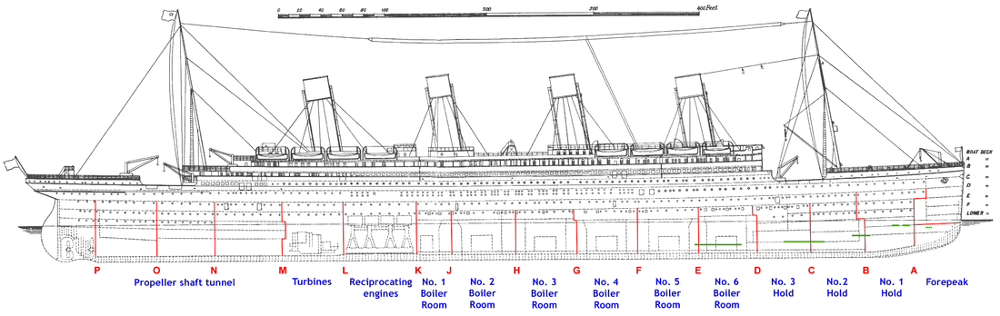
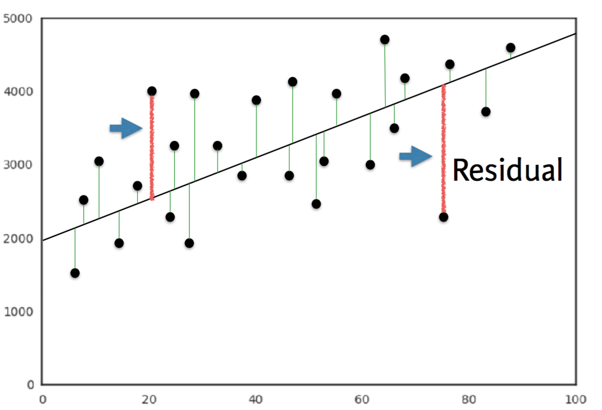

Datacamp notes
Table of Contents
1 Preface
The goal of this paper is not to make predictions about the future. These results may teach us something about the circumstances during the time that the Titanic sank. Teaches us something about the civilization back in those days. (Women, children etc saved first?). Furthermore, this paper is written because I wanted to learn something about machine learning and programming using Python.
I would like to give a special thanks to the following people. My father, who has helped me learn programming in Python and has taught me the basics of machine learning. Thank you for believing in me. Furthermore I would like to thank my supervisor mr. Kampwart for being enthusiastic and keeping me motivated.
2 Introduction
In the year 1912 on the 15th of April one of the most infamous ships in history would crash into an iceberg and sink in the North Atlantic Ocean. During its maiden voyage from Southhampton to New York City on the 14th of April at 11:40 p.m. ship's time, the lookout sounded the alarm when a massive clump of solid ice caught his attention. The first mate had seen the iceberg before the lookout did and tried to turn the ship around. Unfortunately, he was too late. Forty seconds later at a high speed the Titanic collided with a huge rock made of ice with a weight of 30 million kilograms. The collision caused a series of holes along the side of the hull.1 Six of the watertight compartments were filled with water, whereas the ship could only sail on with a maximum of four compartments flooded. Consequently, the Titanic was doomed to sink. The crew understood they needed to act fast. They deployed the evacuation program. The ship carried twenty lifeboats. In principle the protocol "women and children first" was followed. However, this was not true for everyone on board. The chance of being saved was dependent on the class in which one travelled and the place where one found itself during the evacuation. Around 2:20 a.m. parts of the Titanic broke off and sunk with one thousand people still on board. On deck were some of the richest people in the world, including millionaires, movie stars, school teachers and immigrants, who were hoping to find a new life in New York City. A life that they would, therefore, never find. Two hours after the ship sank, the liner RMS Carpathia arrived and saved an estimated 705 people.2 The sinking of the RMS Titanic killed 1502 out of the 2224 people on board, crew members as well as passengers.3
The RMS Titanic was the largest ship on water during that time and it was the second of three ocean liners operated by the White Star Line .4 The ship consisted of nine decks, the boat deck, seven decks labelled from A to G which carried the passengers and the Orlop Deck which was below the waterline. The liner had a height of 175 feet and a breadth of 92 feet.5

Figure 1: Profile of RMS Titanic with the decks indicated
The Titanic may be one of the most iconic ships in history, its story known the world over.6 The tragedy has led to better safety regulations for ships and inspired numerous expeditions, movies, books, plays and characters.
So many passengers have lost their lives due to the fact that there were not enough lifeboats. Luck played a part in surviving this disaster. Moreover, some groups had an advantage compared to other groups. For instance, the "women and children first" policy left a relatively larger number of men aboard. In the same way as children and teenagers had an advantage because of this principle. Similarly, speculations can be made regarding the advantage of the elderly aboard the Titanic. On the one hand it seems logical that the seniors were helped to the lifeboats because of a policy similar to the one about women and children. Older people are not as physically fit as the rest of the passengers, therefore they need to be assisted. On the other hand however, were the elderly the ones left behind as a result of their physical condition. They would have had more trouble climbing from the lowest deck to the boat deck. Finally, some people travelling first class might have had a better chance at surviving as well. The passengers were able to choose between three classes, varying in price and comfort. There was also a correlation between these three classes and wealth and social class. Most of the people travelling first class were, for example, businessmen, politicians and bankers. Second class travellers included professors, authors and tourists, members of the middle class. Emigrant workers moving to the United States and Canada travelled third class. In general, people travelling first class were closer to the boat deck and had, therefore, more chance to escape the flooding of the cabins (see Figure tab:titanicdeckplanone and Figure tab:titanicdeckplantwo). They could get to the life boats faster than people whose cabins were on one of the lower decks.

Figure 2: Deckplan of the Titanic
Figure 3: Deckplan of the Titanic
In this paper we will take a look at what people were more likely to survive the demise of the Titanic with the help of machine learning. We will predict the chances of survival of certain groups of passengers. In addition, we will see if the expectations that children, women and rich people were indeed benefited are correct.
2.1 Machine Learning
For the past 15 years, scientists have tried to make computers learn new things from given data with the help of machine learning. The definition of machine learning given by an professor at Stanford University is as follows: "Machine learning is the science of getting computers to act without being explicitly programmed."7 It consists of giving computers the ability to learn and make decisions from data. These machine learning techniques are used to build predictive models. To illustrate, we will discuss some examples.
Spam emails are sent to everyone who has an emailaccount. Whether the email is from a lottery telling you you have won a $1-million prize or from an unknown travel-agency offering you a trip to an exclusive resort for very little money. It does not matter what the email looks like, your computer is able to distinguish the spam from the usual emails and places the spam in the spam folder of your account. The computer can detect the elements of spam, find patterns and compares the found patterns to new mail. Spam tends to have characteristic elements such as spelling mistakes, an originating address in Nigeria or claims that it needs your bank information. Furthermore, huge tech giants such as Google, Netflix and Spotify use machine learning. The algorithms of these firms offer recommendations and suggestions based on previous user searches, exactly because they can recognise a pattern in these searches.8 Maybe one of the best known examples is AlphaGo. The computer programm developed by Google DeepMind in London to play the the boardgame Go.9 In October 2015, AlphaGo became the first computer Go program to beat a human professional Go player. It was trained on moves of expert players from recorded historical games, a database of around 30 million moves. The algorithm used these moves to mimic human play by attempting to match these moves. Moreover, machine learning is making a breakthrough in the medical field as well. AI pioneer Regina Barzilay carried out research and is now teaching machines to hunt down cancer. Experienced doctors have only a limited amount of patients' experience. Curing cancer is now more a trial-and-error process. With the help of machine learning people can be diagnosed faster and can be cured with the appropriate treatment.10
A lot of different machine learning techniques exist. In this paper we will discuss two examples.
2.2 Different types of Machine Learning
Machine learning can be divided in roughly three categories: reinforcement, unsupervised and supervised learning. The latter two will be discussed and these can also be divided in subgroups. We have to ask ourselves the questions how does the computer know it is getting better or not, and how does it know how to improve? The different answers to these questions have made these different types of machine learning techniques exist, see Figure tab:types.

Figure 4: An illustration of the different types of machine learning
Unsupervised learning This is a version of machine learning where the computer has to uncover hidden patterns from unlabeled data. Correct responses are not provided. The algorithm has to identify similarities between the inputs. This way the inputs that have something in common are categorised together.11
For instance, grouping customers in categories based on buying behaviour without knowing in advance what these categories might be.
Supervised learning The majority of machine learning uses supervised learning. Whereas unsupervised learning has to make decisions from data that is not labeled (the correct responses are not provided), supervised machine learning deals with labeled data. The correct answers are already provided in a training set of examples. The algorithm generalises to respond correctly to all possible inputs, based on this training. The computer is provided with a specific input combined with the correct output or prediction. This way, the machine is trained to see the connections between the input and the right output. When a computer has had enough training or has been provided with enough data points, it will make less mistakes with every try. Eventually the computer is able to produce the right output based on a given input. 12
The Titanic task is a perfect example of supervised learning. We already know who has survived the disaster and who has not. This way we can train our computer on the complete dataset. Consequently, the computer learns to connect particular variables to the fact if someone has survived or not. Given a new person, of whom we don't know if he or she has survived it, the computer can make a prediction. We can produce the chances of survival for particular variables, e.g. gender, class etc. Picking the right variables is crucial for producing a model. Moreover, choosing how to process your data is important. We will put a lot of effort in choosing the right variables and how to process the data. This will take up a lot of time and is part of the trial-and-error procedure. A dataset consists of datapoints. These are samples described using predictor variables and a target variable. Organised in a table with rows and columns. The goal is to predict the target variable, in this case 1 or 0 representing survived or not survived respectively in our Titanic dataset, given the predictor variables, such as class, gender, age, siblings etc.
We can specify two different types of supervised learning:
- Classification: the target variable consists of categories. Predicting survival on the Titanic is a classification problem. We have to classify, based on our predictor variables, if a person belongs to the class of survived (1) or not survived (0). This is a special case of a classification problem called binary classification. For the Titanic problem we use labelled data. Consequently, we use supervised machine learning.
- Regression: the target variable is continuous. For instance, a dataset containing housing price data like the year the house was built, number of bedrooms, acreage. There is a price associated with each house. The goal is to predict the price of a house, given these variables. For the reason that a price is a continuous variable, this problem is an example of regression.
2.3 Algorithms
To train our computer on the dataset we use two different algorithms. Because we approach our problem in two different ways, the results will be more trustworthy. Training our model on the data using an algorithm is called 'fitting' a model to the data. Fitting means minimizing the classification mistakes that we make. We split our data into a training and test set. We fit our model to the training data and predict on the test set.
2.3.1 KNearestNeighbours
To begin with, we will use the so-called KNearestNeighbours algorithm. It predicts a label of a datapoint by looking at the 'k' closest labelled data points. KNN takes a majority vote on what label an undecided point has to have. For instance, when we want to decide if a dot on this map is a blue square or a red triangle, we can choose our 'k' as 3 (see Figure tab:knn). With choosing our 'k', we create a set of decision boundaries. Our computer will look at the three closest datapoints to classify our undecided point. If two of those three are blue squares, it classifies our undecided point as a blue square. If two of those three points are red triangles, it classifies our undecided point as a red triangle. The trick is to choose the right value for 'k'. Choosing a too large value for 'k', will lead to underfitting therefore creating a smoother decision boundary. This way we will have a less complex model, because our algorithm generalizes too much and uses too little information. On the other side, choosing a too small value for 'k' will lead to overfitting. Consequently, our model will be more complex and will have a more erratic pattern. We use 'too much' information and our model becomes less reliable. These problems of overfitting and underfitting are very common in the world of machine learning. They also occur using other algorithms. Finding the right 'k' is a combination of using other algorithms to find it and a trial-and-error procedure.13

Figure 5: Illustration of the algorithm called KNearestNeighbours
2.3.2 Logistic regression
Second, we use an algorithm called logistic regression (LogReg). The name may be misleading because LogReg is commonly used for classification problems. It outputs probabilities. For example, if the dataset consists of \(n\) different classes, the algorithm calculates the chance that one specific case is classified as belonging to one of these \(n\) classes. In our case, we see \(n=2\). Therefore, we are dealing with a binary classification problem.14 This implies the following: if we find \(p>0.5\), the variable is classified as 1, the passenger has survived the disaster; when we see \(p<0.5\), it is classified as 0, the passenger has not survived.
To explain the principle of logistic regression, we will have a look at a linear function first:
\begin{equation} y=ax+b \end{equation}In this case there is only one predictor variable. But we have more than one predictor variable in our dataset of the Titanic. \(a\) and \(b\) are the parameters of our model. We want to fit a line to the data. Fitting, in this case, consists of choosing a slope \(a\) and an intercept \(b\). Our Titanic dataset has more than one feature, because we have more than one predictor variable. Using linear regression, our line will look something like this, where each \(x\) represents a different predictor variable.
\begin{equation} y=a_1x_1+a_2x_2+ \dots + a_nx_n+b+\varepsilon_{i} \end{equation}By calculating the vertical distance between each data point and the line, we can get an impression of how accurate our model is. This distance is called the residual (\(\varepsilon\)). One option is to minimze the sum of the residuals. However, this will not work because large positive values will cancel out large negative values. Consequently, shifting the line upwards will always reduce the sum of the residuals. This is because the positive values will be \(\infty\) and the negative values will be \(-\infty\). As a result of this, the sum of the residuals will be zero. So, to make sure that our line is as close to the actual data as possible, we calculate the sum of squared residuals (see Figure tab:ols and see Equation \ref{eq:residual}). This is called OLS, which stands for Ordinary Least Squares. When we call fit on our logistic regression model in scitkitlearn, it performs this OLS under the hood. Scikitlearn is a popular machine learning library for Python, which we will use to train our computer (see Footnote \ref{fn:datacamp}).
\begin{equation} \label{eq:residual} \sum_{i=1}^{N}\varepsilon^2_{i} \end{equation}
Figure 6: Ordinary Least Squares: Minimize sum of squares of residuals
The red lines in the illustration (see Figure tab:ols) represent \(\varepsilon^2_{i}\). The equations mentioned earlier are used most commonly for linear regression. We will use logistic regression, because our target variable is not continuous: our variable is either 0 or 1. The logistic function \(\varsigma(t)\) is defined as follows:
\begin{equation} \label{eq:2} \sigma_t = \frac{e^t}{1+e^t} \end{equation}Because we have three variables(i.e. age, gender and class), \(t\) in this case is of the form:
\begin{equation} y=a_1x_1+a_2x_2+a_3x_3+b+\varepsilon_{i} \end{equation}As the name already tells us suggests, logistic regression is based on the logistic function. This is a sigmoid function (see Figure tab:log), which takes any real input \(t\) (\(t\in{\rm I\!R}\)), and outputs a value between zero and one, a probability.

Figure 7: The logistic function
The same principle applies to logistic regression regarding the underfitting and overfitting problem. Adding more independent variables to our model will increase the amount of explained variance. Our model will be more complex and will have a more erratic pattern, as mentioned earlier. Using too little independent variables will result in underfitting, where our model is too 'simple'.
After using these two algorithms, we can measure model performance. To do this, we can use metrics such as accuracy. Accuracy is the fraction of correct predictions, think of the fraction of cases where the model correctly predicts that someone survived. How these metrics work, will be explained later on.
To sum up, we follow this procedure: We split our dataset into a training set and test set. Then we fit or train the classifier to the training set. Subsequently, we predict on the test set and print the prediction. In the end, we compare our predictions to the known labels and compute the metric of accuracy.
2.4 Main questions and sub-questions
This research and information leads us to the following main question and sub-questions:
Main question
Is it possible to make an accurate prediction whether the passengers on board of the Titanic survived the disaster or not using the information about gender, class and age given in the dataset?
Sub-questions
- What is the influence of gender on the chance of surviving after the Titanic had sunk?
- What is the influence of class on the chance of surviving after the Titanic had sunk?
- What is the influence of age on the chance of surviving after the Titanic had sunk?
- Is there a monotonous relationship between age and survival rate?
These questions lead to the following hypotheses:
- Main question : Yes this is possible, with the help of machine learning using the algorithms KNearestNeighbours and logistic regression.
- Sub-questions :
- The survival rate of women is higher than the survival rate of men.
- The survival rate of passengers who were travelling in a higher class is higher than those travelling in a lower class.
- The survival rate of children and elderly is higher than the survival rate of the adults.
- The relationship between age and survival rate is not monotonous.
Goal is to learn from data for which the right output is known so we can make predictions on new data for which we don't know the output.
How well will model perform on new data that the algorithm has never seen before. Splitting of your dataset.
- Aanhalingstekens bij fitting
- age: protocol, children, elderly benefited, or maybe disadvantaged
- Verwijzen naar een equation?
Choose the line that minimizes the error function / loss function. What is an error function? Explain.
Larger area under ROC curve = better model. Area is called AUC. Popular metric for classification models. AUC using cross validation. If AUC is greater than 0,5, the model is better than just random guessing.
matplotlib
import numpy as np
1,2,3 - steps Introduction
- Split dataset into a training set and test set, new dataset.
- Fit/train classifier to the training set, what is fitting? Difference Knearest and Logistic
- Predict on the test set
- Print the prediction
- Compare predictions with known labels
Perform your split so that your split reflects labels on your data. You want labels to be distributed as they are in the original dataset.
Problems
Model performance is dependent on the way our data is split. Results are not reliable because of this. We solve this by using cross-validation. insert image of folds. Second fold as test set, fit on remaining data, predict on test set and compute metric of interest. 5-fold cross-validation. k-fold cross validation. More folds is more computationally expensive.
Measuring model performance using accuracy. This is a fraction of correctly classified samples. However, this is not always a useful metric. For instance, if we take a look at spam classification. 99% of your email is real and 1% is spam. We instantiate a classifier which classifies all emails as real. Computing the accuracy will give us a score of 99%, which is pretty high. But our classifier is horrible at predicting spam. Class imbalance. We have to use more nuanced metrics, such as the confusion matrix. insert image of confusion matrix. Accuracy, precision, recall, F1 score. High precision → not many real emails are predicted as spam. High recall → predicted most spam emails correctly. Confusion matrix in N dimensions?
- Underfitting and overfitting
- Train-test split
- Cross-validation
- GridSearch
3 Preparation
3.1 A first look at the dataset
First we perform some numerical EDA. EDA stands for exploratory data analysis. This will help us explore our dataset and get a first impression of the information. Not necessary to build a dataframa, for the information is already organised in a table.
code with describe etc
Next we perform some visual EDA. Scatter matrix, plotting, binary Seaborn's countplot. Possible correlation? Explain / describe diagrams.
3.2 Preprocessing techniques
How to deal with missing values, dummies, place of boarding, gender, cabin numbers. Map of Titanic? Need to encode categorical features numerically → convert to dummy variables. 0 = not that category.
Missing data
- NaN replace
- drop missing data
- impute missing data: make an educated guess
Centering and scaling
- Features on larger scales can unduly influence the model.
- We want features on a similar scale. Normalizing
- Standardization: substract the mean and divide by variance.
- Substract minimum and divide by the range
- Normalize so that data ranges from -1 to +1
We have to build a classifier that needs to learn from already labeled data. Training data = already labeled data.
Using GridSearchCV or RandomizedSearchCV, we can choose our parameters for KNearestNeighbours (K) and LogisticRegression (C). Large C kan lead to overfitting, small C kan lead to underfitting.
4 Results
5 Conclusion
6 Discussion
7 References
\printbibliography